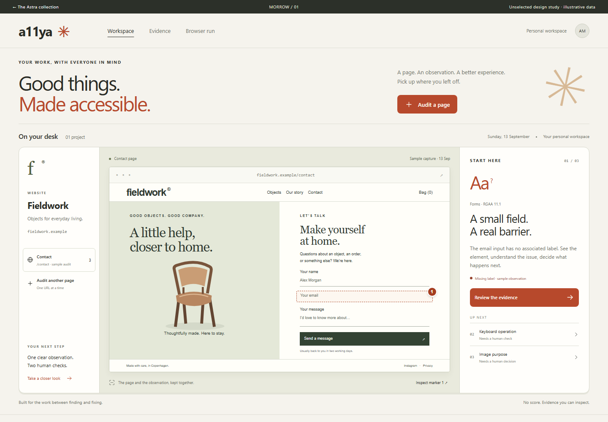
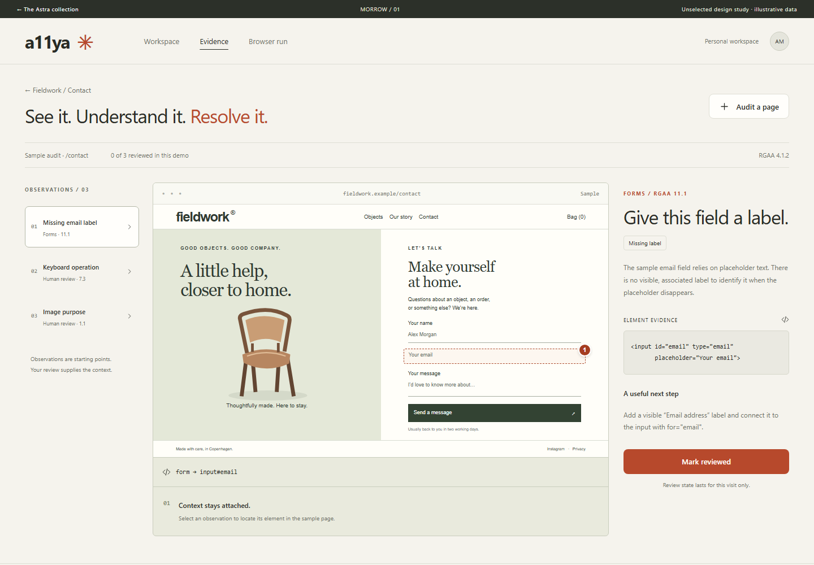
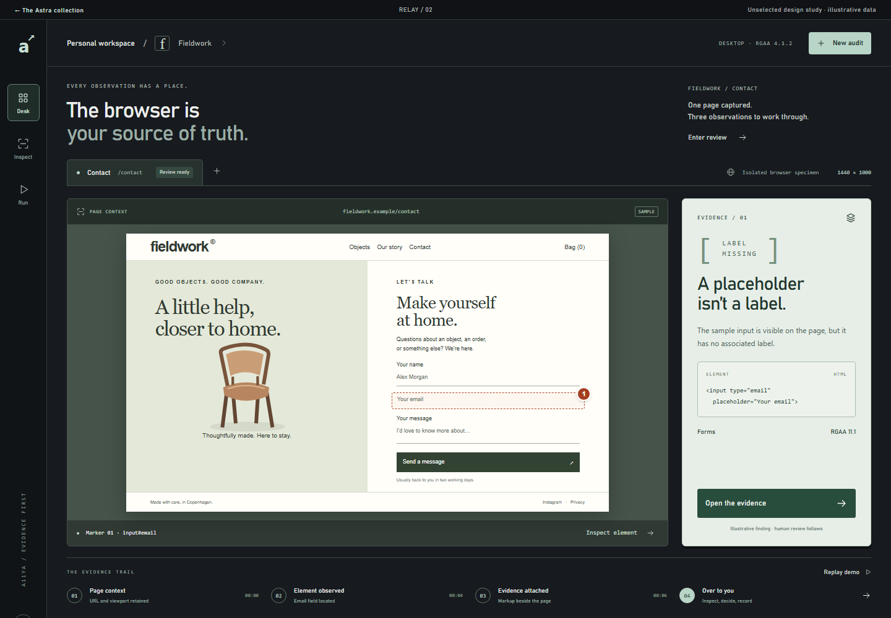
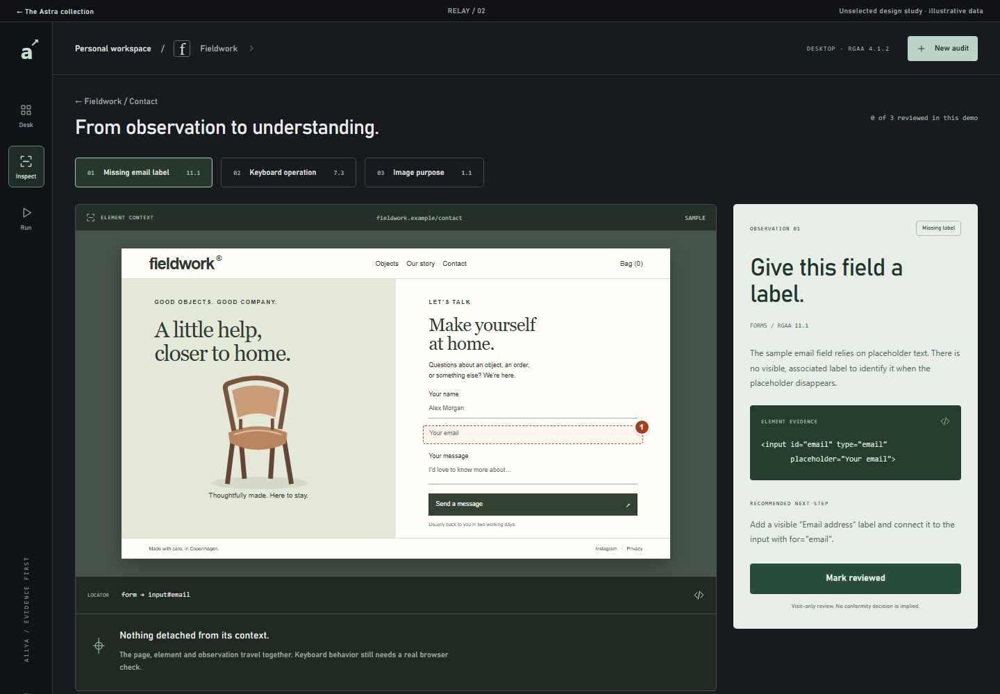
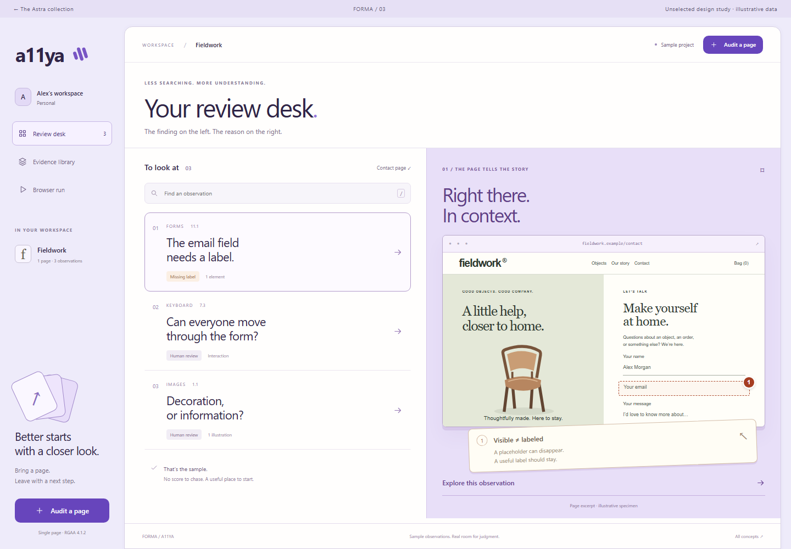
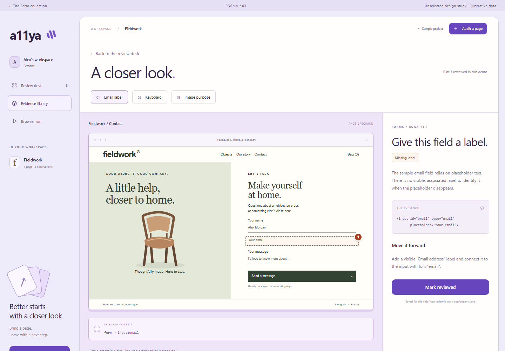

Enter Morrow ↗
Inspect Morrow ↗Morrow✳
01Human warmth. A clear next step.
An open, sunlit desk in chalk, olive and clay. The page sits between its project and the next decision. Quiet confidence, without disappearing.
THE SIGNATURE MOMENTA page marker becomes a useful decision.

Enter Relay ↗
Inspect Relay ↗Relay↗
02Deep technology. In plain sight.
Graphite, eucalyptus and a compact instrument rail. The browser takes the stage; a bright evidence panel turns observation into something you can act on.
THE SIGNATURE MOMENTThe browser, its evidence and its trail, together.

Enter Forma ↗
Inspect Forma ↗Forma≋
03A sharper desk. A lighter day.
A violet frame around a crisp, typographic inbox. Findings read like questions worth answering, with an attached visual note that makes the issue tangible.
THE SIGNATURE MOMENTFinding on the left. Understanding on the right.